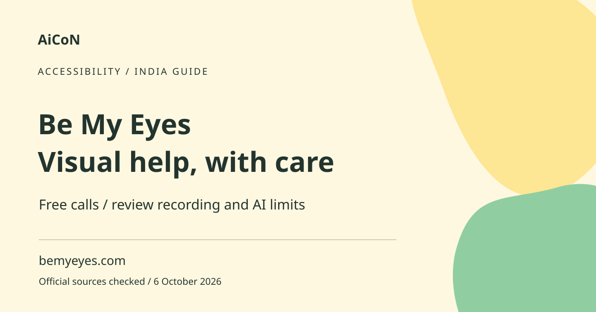

Be My Eyes: free visual help and privacy checks
Be My Eyes connects blind and low-vision users with volunteers, companies and AI visual assistance. Its ordinary volunteer calls are described as free and unlimited. Read the recording and sharing policy before showing private information.

Human help and Be My AI
A live volunteer can help interpret what the camera shows while you explain the task. Be My AI offers generated visual descriptions. They are different services with different strengths and limitations. AI can confidently misread a label or miss something in the frame. A volunteer also cannot see beyond what you show or provide every kind of professional advice.
How to use it, step by step
- Use bemyeyes.com and its official app-store route. Confirm that the app is the real service.
- Review camera and microphone permissions and the current privacy policy. Choose whether the task is appropriate to share.
- Prepare a non-sensitive view of the object or area. Move private documents, screens and other people out of frame where possible.
- For volunteer help, use the app's current call workflow and explain what you need. Keep the phone steady and ask for clarification if the view is poor.
- For AI, submit only the image needed for the task and read or listen to its description carefully.
- For a medicine label, allergy information or other safety-critical detail, confirm with a suitable person or professional rather than relying on AI alone.
- End the session when finished and review any image, call or history controls available.
- If privacy is important, use the policy's opt-out or deletion route and understand its limits before sharing sensitive material.
Free access and worldwide claims
The main site describes volunteer calls as free and unlimited, available day and night, and says the service operates in over 150 countries. This is not a guarantee that a volunteer in your requested language will answer immediately. Company-specific support and workplace services may have separate terms. Follow the current app options for your account.
Important privacy qualification
The marketing page says volunteers only hear your voice and see what you share. That does not mean the service never records or stores the session. The checked policy says video calls, photos and Be My AI queries are stored for service and related purposes. Volunteer videos may be shared under agreements for research and development, including AI. Personal details visible or spoken within a recording can remain even when metadata is removed.
Opt-out and deletion
The policy says users can opt out of video sharing with third parties through its stated email route without losing access to the service. It also permits deletion requests. It warns that the company cannot identify or delete videos already shared from systems it does not control. Read the current policy for the process and the information needed to verify a request. Opt-out is not the same as never having recorded a call.
Be My AI and company calls differ
The policy says the AI provider does not store or use your photo and query beyond responding, but Be My Eyes itself may handle them for purposes described in its policy. That distinction matters. Service Connect calls to companies and workplace products have separate data arrangements. Do not assume ordinary volunteer terms apply to every service inside the app.
Practical safety in India and Kerala
Ask for everyday visual help while preserving control of your own decisions. Do not share PINs, one-time codes, bank balances or identity documents to complete an unrelated task. For navigation, traffic, medical dosage or food-allergy checks, use an appropriate safe method and qualified help. A remote camera description cannot guarantee a path or medicine is safe.
Frequently asked questions
Are calls free?
The site describes ordinary volunteer calls as free and unlimited.
Are volunteer calls never recorded?
No. The policy says calls are recorded and stored.
Can I opt out of video sharing?
The policy provides an opt-out route without loss of service access.
Can AI confirm a medicine dose?
Do not rely on AI alone for safety-critical details. Get appropriate human confirmation.
Official sources
Checked 6 October 2026. Expanded from an AiCoN short post delivered 5 October 2026. Portal screens and rules can change.